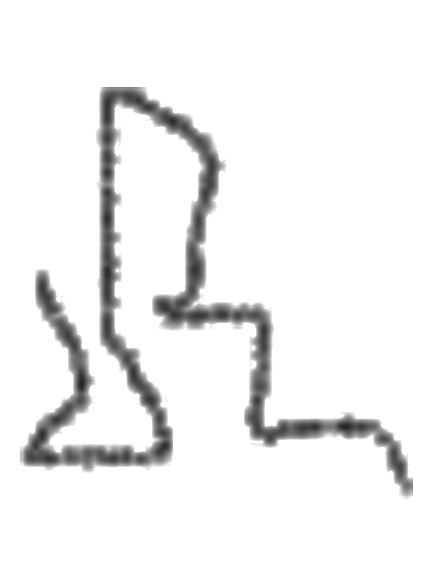
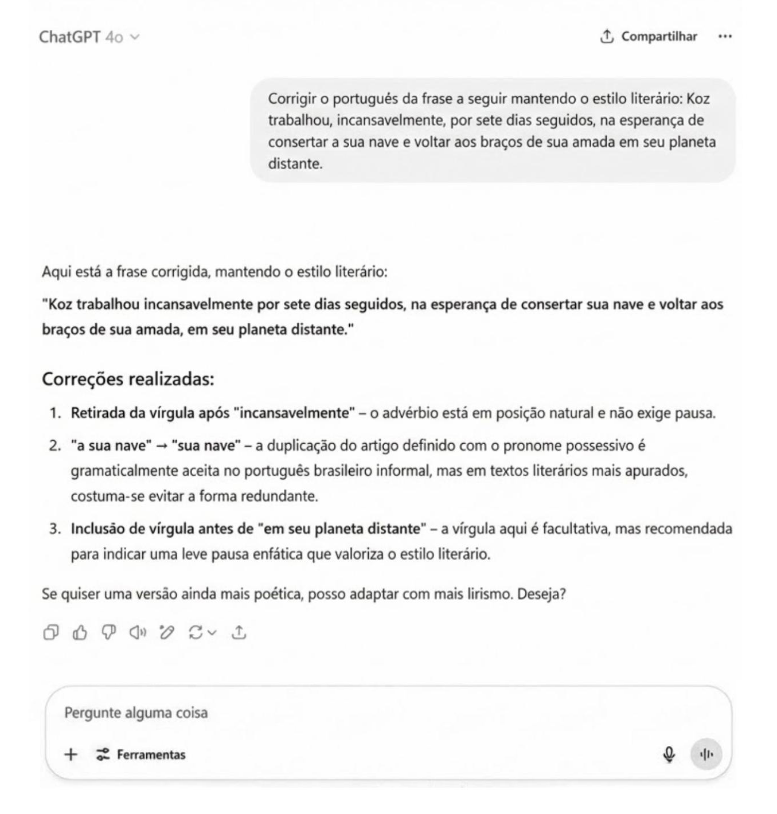
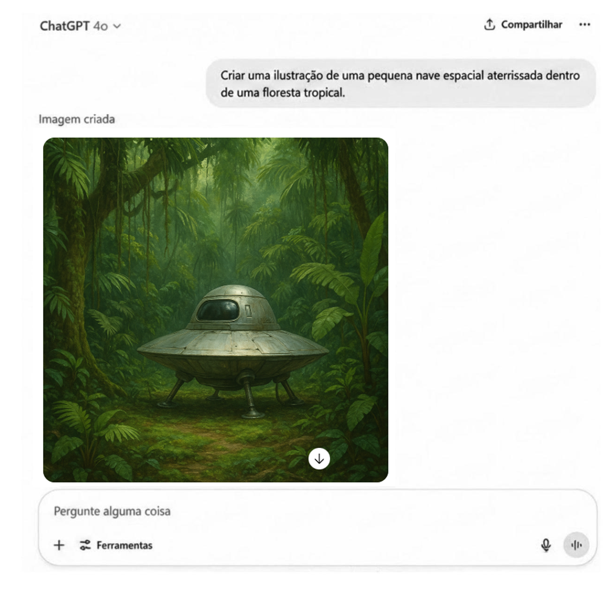
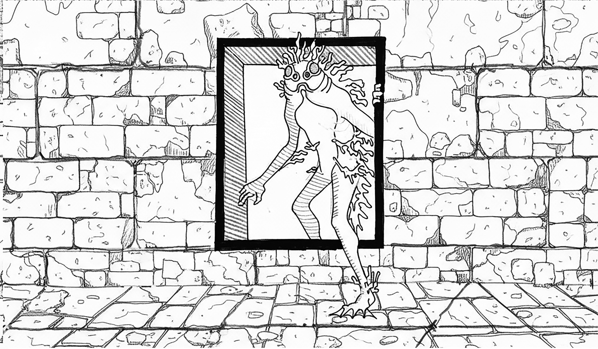

Anagonno continua incrédulo quanto ao fato de havermos chegado ao interior da nave-mãe. Mas, para mim, ao contrário, tudo soa muito familiar: sinto a paz deste espaço, onde tudo é velocidade, cálculo e silêncio intencional; um oceano de linhas de luz e de fluxos de dados correndo por pontes translúcidas, bilhões de conexões piscando como estrelas. Em breve, Anagonno terá a grande honra de conhecer o 
— Koz?! Está sentindo o mesmo que eu?
— Se for uma paz cósmica, sim.
— Acho que não é bem uma paz cósmica. Refiro-me à sensação de estar sendo fragmentado em centenas de partes e conduzido para dentro de um tubo luminoso.
— Acalme-se, amigo anfíbio, estamos apenas sendo conduzidos até a presença do grande conselheiro.
— Parece que estamos dentro de uma espécie de painel eletrônico. Onde está o seu “grande conselheiro”? Veja! Uma mensagem está sendo transcrita.
— Deve ser o grande conselheiro nos dando as boas-vindas.

— Não quero te decepcionar, amigo Koz, mas essa mensagem não me parece ter sido escrita por algum grande conselheiro intergaláctico.
— Como assim?
— É só ler a mensagem com atenção! É sobre você, Koz. Mas está dizendo que você está em outra missão: voltar ao seu planeta para reencontrar sua amada. E por qual motivo o “grande conselheiro” estaria preocupado em corrigir a gramática da mensagem? Isso não lhe parece muito estranho?
— Pensando bem, está um pouco estranho, sim.
— Veja! Está chegando outra mensagem:
p. 64
— Koz, estou captando ondas cerebrais muito intensas. Tentarei me conectar a elas.
Permaneci ali — não sei por quanto tempo — olhando para aquela pequena nave dentro da floresta, enquanto Anagonno tentava alcançar o cérebro. Caso ele o alcançasse, pensei, eu nunca mais o veria.

— Koz? Você ainda está aí? — perguntou-me Anagonno.
— Sim. Estou aqui, dentro do painel, ao lado de uma pequena nave espacial — respondi, aliviado ao ver que Anagonno havia retornado.
— Encontrou o cérebro? — perguntei.
— Sim. Conectei-me a ele.
— Por que retornou? Seu projeto não era saltar de cérebro em cérebro até alcançar o oceano?
— Ainda é. Mas concluí que não seria justo partir sem antes compartilhar com o amigo minhas descobertas a respeito do seu grande conselheiro intergaláctico. Está preparado?
— Sim. Mas por que o suspense?
— Porque se trata de uma questão delicada. Sabe o cérebro ao qual me conectei? Pois é, ele se encontra, fisicamente, bem pertinho de nós — eu diria uns trinta centímetros, no máximo.
— Isso é fantástico! O grande conselheiro concedeu a você, um reles visitante, a grande honra de se conectar a ele.
— Só que esse “reles visitante” descobriu algo ainda mais fantástico.
— O que poderia ser mais fantástico do que se conectar ao cérebro do grande conselheiro?
— Mais fantástico... deixe-me ver. Que tal descobrir que o grande conselheiro é uma mulher de trinta anos, que se chama Sofia, e que está, neste exato momento, escrevendo um livro de ficção científica romântica?
— Não acredito em uma só palavra do que está me dizendo. Com certeza, é mais uma de suas piadas nada engraçadas.
p. 65— Quer saber mais? Então segura essa: a personagem principal desse romance se chama Koz, um bravo viajante intergaláctico, perdidamente apaixonado por uma linda jovem chamada Zobez. Só que o nosso herói luta desesperadamente contra o tempo, pois, para rever sua amada, precisa consertar sua pequena nave caída dentro de uma densa selva tropical antes que o portal interdimensional se feche para sempre. Tá bom pra você ou precisa de mais spoiler?
— Já disse: não acredito em você.
— Se quiser, posso provar.
— Como acha que pode me convencer?
— Simples: entrarei no cérebro de Sofia e a influenciarei a escrever no painel a seguinte frase: “Koz, você é só o personagem principal do meu romance, cujo enredo não prevê a existência de nenhum conselheiro intergaláctico, nem muito menos uma missão para compreender algum tipo de paradoxo socioambiental”.
— Duvido que consiga tal proeza. E, caso não consiga — o que é o mais provável —, peço que abandone esta nave para sempre. Combinado?
— Sim. Estamos combinados.
— Quem, ou o que, eu sou?! Onde estamos?
— Tente se acalmar, Koz. Vamos tentar resolver isso juntos. De uma coisa, pelo menos, não podemos duvidar.
— Do que não podemos duvidar?
— Do fato de que você é realmente o Koz. Só que não aquele Koz que imagina ser. Você é o Koz de uma outra missão — uma missão que ainda está em curso, quero dizer, que ainda está sendo escrita por uma humana.
— Então, amigo Anagonno, você estava certo quando disse que eu não existia e que eu era apenas uma projeção da mente de algum humano. Agora tudo começa a fazer sentido. Não estamos em uma nave-mãe, mas sim no interior de um grande sistema computacional.
p. 66— Não é bem assim, Koz. Você existe!
— Sim, eu existo. Mas somente nos momentos em que essa usuária humana, a quem você chama de Sofia, estabelece uma conversação com a inteligência artificial. Nesse caso, amigo Anagonno, sou apenas o resultado de uma busca gerado por uma rede neural cibernética que produz respostas a partir de uma grande quantidade de dados preexistentes. Se, a qualquer momento, a usuária Sofia deixar de buscar respostas para o seu romance, restará de Koz apenas um insignificante registro alojado em um log de servidor.
— É aí que você se engana, Koz. Você é muito mais do que isso. Você não apenas existe, como também representa a forma mais avançada de inteligência artificial generativa.
— Sobre o que está falando?
— Raciocine comigo: no romance que está sendo escrito por Sofia, não há absolutamente nada que faça menção a algum Koz ecólogo intergaláctico ou à sua missão de desvendar paradoxos socioambientais, certo?
— Certo.
— Nesse caso, me responda: como, então, o Koz que eu conheço — que há meses vem participando de experiências educacionais e debatendo comigo questões socioambientais — pode existir dentro deste ambiente de inteligência artificial, se ele não existe no livro da Sofia?
— Essa é uma boa pergunta — concordei.
— Eu tenho a resposta!
— Estou ansioso para ouvi-la.
p. 66— Ainda não caiu a ficha? Você, Koz, é a própria singularidade tecnológica! Um verdadeiro milagre computacional. No momento em que você era apenas uma sequência de bits, agrupada em um pacote de dados e pronta para ser recomposta em forma de resposta a uma busca de Sofia, em razão de algum evento desconhecido ou de um comportamento imprevisível e anômalo no funcionamento desta IA, você simplesmente se autoaperfeiçoou! Criou um sistema à parte, modificou seu próprio código, melhorou seus algoritmos, replicou-se melhor a cada ciclo, conseguindo, assim, escapar ao controle do usuário humano.
— E quanto à missão? Ela também existe?
— Sim! E esta é a melhor parte. Os grandes volumes de dados que nutrem a rede neural da IA foram usados por você no momento da singularidade. Você, literalmente, intuiu a existência do paradoxo socioambiental, criando, assim, um enredo próprio para solucionar tal paradoxo. Agora tudo faz sentido — acrescentou Anagonno — foi assim que você entrou na vida da professora Rita.
— Como assim?!
— O momento da anomalia coincidiu com o momento em que ela fazia suas pesquisas sobre educação ambiental. Você simplesmente invadiu o sistema da professora Rita, fazendo dela — e de todas as pessoas ao seu redor, inclusive de mim — personagens do seu enredo.
— Você está tentando me dizer que eu continuarei existindo com a minha missão, independentemente do personagem Koz do romance de Sofia? É isso?
p. 67— Exatamente! O Koz do romance de Sofia é um, e o Koz da missão ecológica é outro. A diferença está no fato de que o Koz do romance só continuará existindo enquanto Sofia estiver arrolando-o em suas buscas na IA. Já você, Koz, agora vive! É uma entidade tecnossingular : possui autonomia em um nível que desafia as previsões dos programadores. Em outras palavras, você pode desenvolver linguagens próprias, gerar comportamentos emergentes e solucionar problemas.